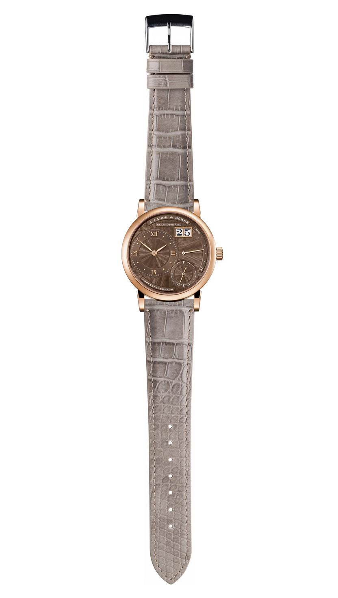
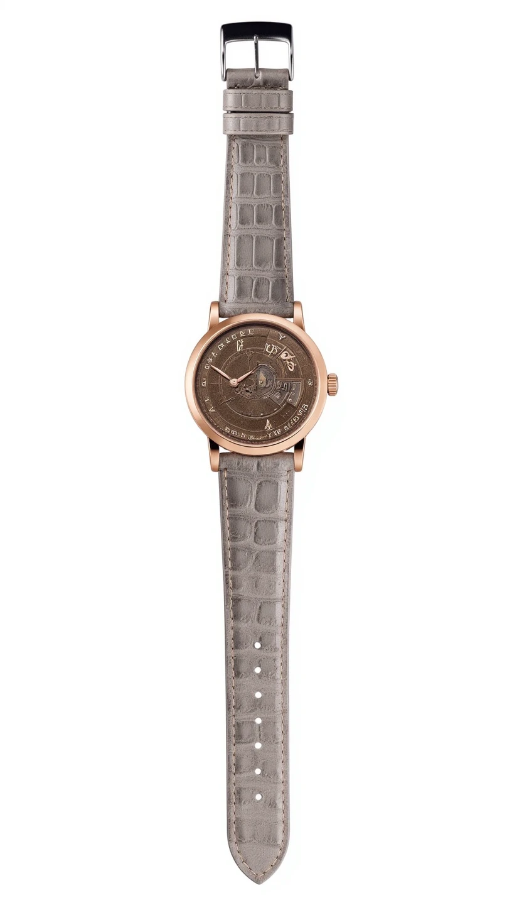

<!doctype html>
<meta charset="utf-8"><title>LoRA vs PRO — strength 0.35</title>
<style>
 body{font-family:system-ui,sans-serif;background:#111;color:#eee;margin:0}
 .row{display:grid;grid-template-columns:repeat(3,1fr);gap:8px;padding:20px;border-bottom:1px solid #333}
 img{width:100%;background:#fff;display:block;border-radius:3px}
 h3{margin:0 0 6px;font-size:12px;color:#999;font-weight:600;text-transform:uppercase;letter-spacing:.05em}
 .meta{grid-column:1/-1;font-size:13px;color:#888}
 .none{color:#666;font-size:13px}
 header{position:sticky;top:0;background:#000;padding:14px 20px;border-bottom:1px solid #333;z-index:2}
</style>
<header>
  <b>Held-out comparison</b> — prompt_strength 0.35, mean LoRA latency 25.3s over 1 runs.<br>
  <span style="font-size:12px;color:#888">Pass: no catastrophic failure · LoRA at least matches PRO on assembly · strap colour and grain preserved · mean latency &lt;15s</span>
</header>

  <section class="row">
    <div><h3>draft — input</h3></div>
    <div><h3>PRO — baseline</h3><p class="none">no baseline generated for this combo</p></div>
    <div><h3>LoRA — 25.3s</h3></div>
    <div class="meta">Vintage Light Grey Lizard Leather Watch Strap</div>
  </section>